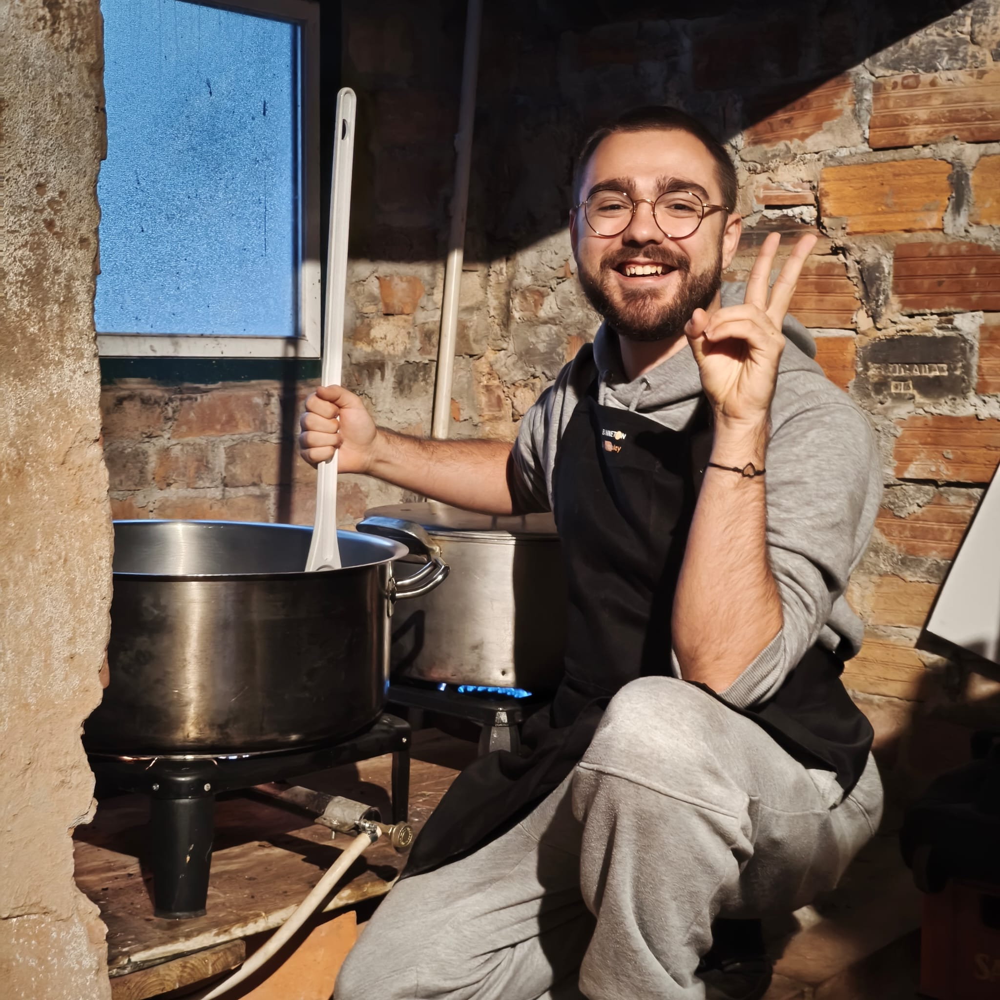

I'm a Ph.D. Candidate in Information Science and Technology at ISCTE-IUL in Lisbon, Portugal. My research work is on Programming Education.
I have a Bachelor's and a Master's Degree in Computer Science and Engineering.
My primary research interests are educational resource generation, educational programming tools, and automated evaluation.
I'm currently teaching or have taught these courses:
{% assign course_names = page.teaching_activities | map: "course_designation" | uniq %}| Course | Degrees | Years |
|---|---|---|
| {{ course_name }} | {{ degrees }} | {{ years }} |
I volunteer at AMURT's Community Kitchen in Lisbon, Portugal. Once a week, we cook enough vegan food for around 40 to 50 individual meals. We deliver these meals to REFOOD on the same day, where they are then served (still warm!) to those in need.
Here's me having the time of my life cooking an enormous pot of soy bolognese:

Want a formal account of my education and professional activities? Check out my resumé!